LangWBC: Language-directed Humanoid Whole-Body Control via End-to-end Learning
LangWBC:
LangWBC:
Teacher + Student

Original Zotero notes associated with papers in this category. Available note images are included. Missing images are marked below.
LangWBC:
Teacher + Student
HiWET: End-Effector Tracking for Long-Horizon Humanoid
HUSKY：skateboarding: non-holonomic constraints + coupled human-object interactions, Learning-based framework (skateboard system modeling + physics-aware whole-body control)
AMP
System Modeling:
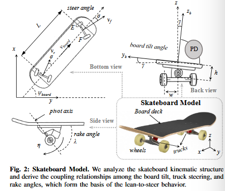
truck steering angle is determined by the board tilt
Humanoid Skateboarding Task
Pushing + Steering
METHOD
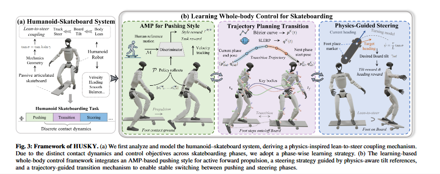
A. Problem Formulation - RL
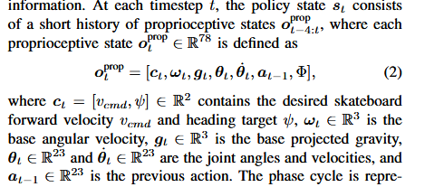
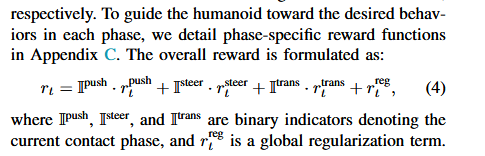
B.AMP for Pushing Style
observation: robot joint angles
loss of Discriminator:
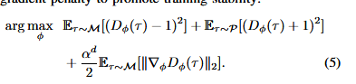
reward of policy
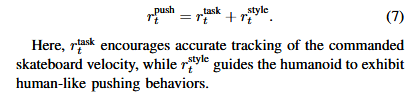
C. Physics-Guided Heading-Oriented Steering
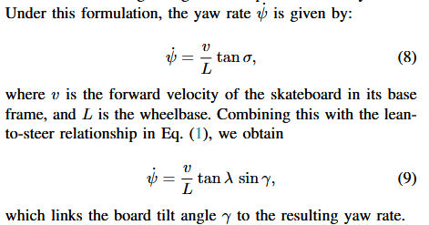
Smoothness considered:
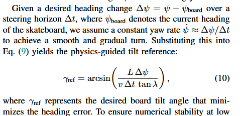
tilt + heading reward
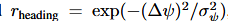
D. Trajectory Planning for Phase Transition - pushing to steering
Essential Positions + Bezier curve
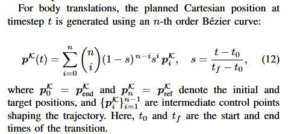
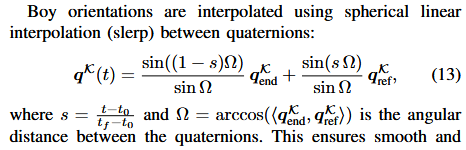
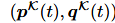
E. Sim-to-Real Transfer
a. Skateboard Physical Identification
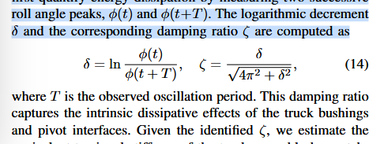
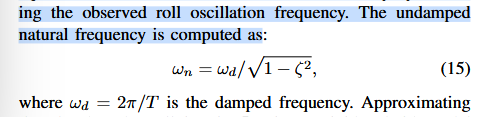
b. Domain Randomization
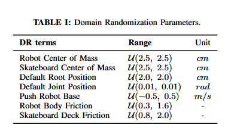
Psi-Zero : Loco-motion Tasks, Decoupling learning process by staging training paradigm with different learning objectives, Dexterous manipulation
Pretrained VLM backbone on large-scale egocentric human videos
Posttrained flow-based action expert on high-quality humanoid robot data
Human-robot unified action space
MM-DiT for action sequence in joint space
LangWBC, LeVERB
Dexterous Manipulation: Being-H0
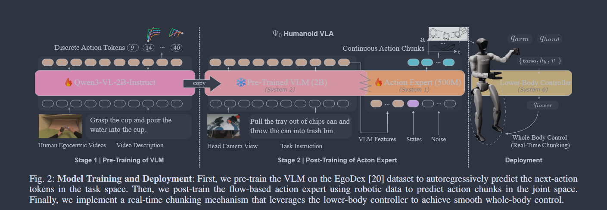
Psi-0:
1.Architecture - Triple-system
System 2: Qwen3-VL-2B
↓ VLM Features
System 1: MM-DiT - 8DoF
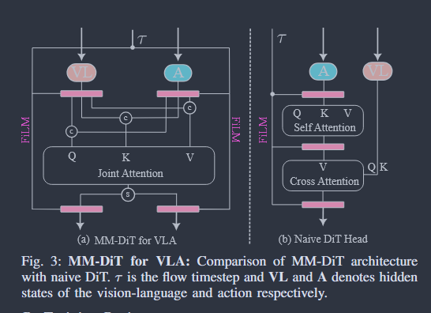
System 0: AMO
Training Recipe
1) Ego-centric Human Video: EgoDex
“We use a shared action representation for both human hands and robot end-effectors. Specifically, the 48-DoF action in task space is defined as a ≜ {al, ar} and each al or ar ∈ R24 is {Twrist, Pthumb, Pindex, Pmiddle, Pring, Ppinky}. The T ∈ R9 is the 9-DoF wrist pose vector consisting of 3D position and 6D rotation. Each P ∈ R3 is a 3D fingertip position.” (Wei 等, 2026, p. 3)
Tokenize - FAST
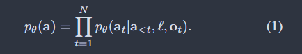
2) Post-Training - action expert- Cross-task Real Humanoid Data
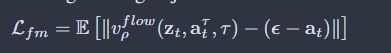
3) Fine-Tuning on In-Domain Data - Few-shots
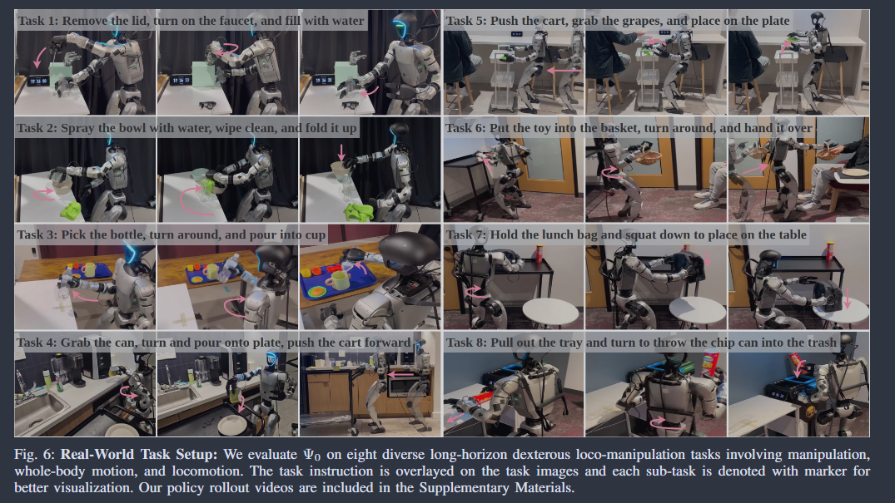
Real time Chunking
Kevin Black, Allen Z Ren, Michael Equi, and Sergey Levine. Training-time action conditioning for efficient real-time chunking. arXiv preprint arXiv:2512.05964, 2025.
d = uniform(0, dmax)
dmax ∈ [0, H − s)
Tailoring Teleopration for Loco-Manipulation
Separate upper-body pose tracking, dexterous manipulation and locomotion commands
PICO + Wrist Trackers - Upper-body
Waist + Foot Trackers - Lower-body